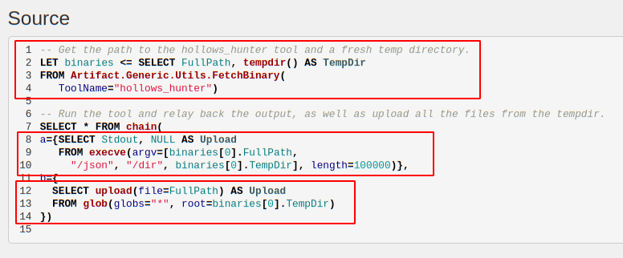
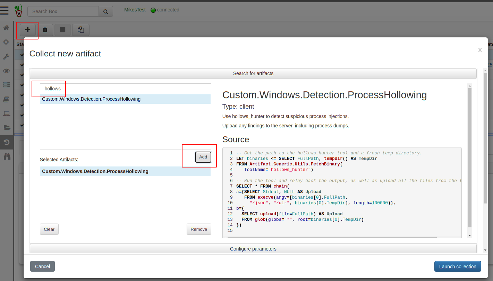
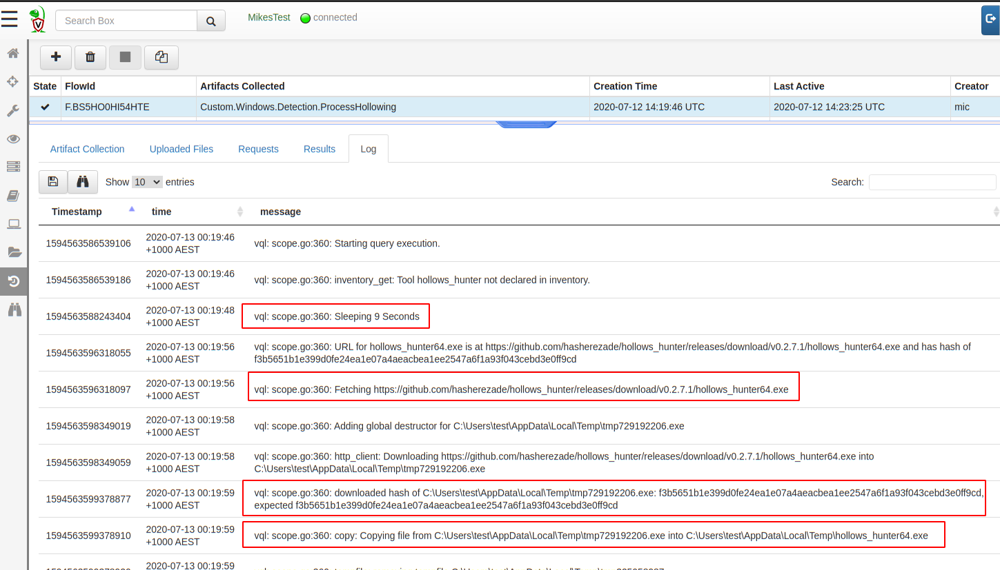
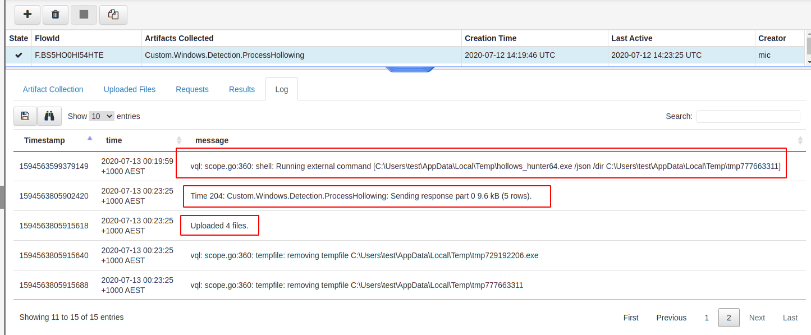
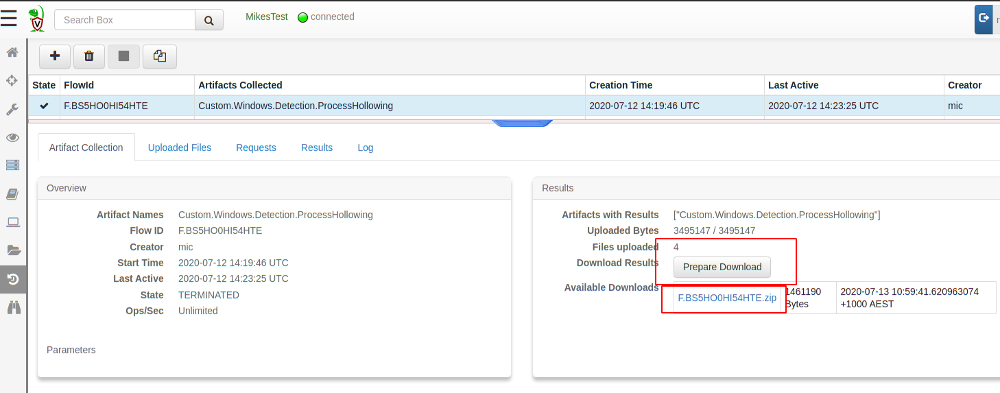
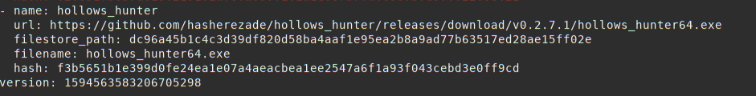
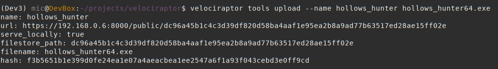

Velociraptor in the tool age
Velociraptor is a powerful endpoint visibility tool. It has plugins and parsers for many file formats, such as raw NTFS access, raw registry hive, prefetch files etc.
However, as most DFIR professionals know, there are so many tools out there that we would love to use in our IR work. One of the strengths of Velociraptor is its flexibility afforded by the use of the Velociraptor Query Language (VQL).
We have written before on how VQL can be extended by use of short PowerShell scripts, by including these scripts directly in the Artifact definitions. This is a great way to extend the functionality provided by VQL, but what if we wanted to launch a completely separate binary on the endpoint, or a larger powershell module? How can Velociraptor facilitate the distribution, coordination and collection of tool output from thousands of endpoints efficiently and quickly?
Since release 0.4.6, Velociraptor supports including external tools directly in the artifact definition. This makes it easier than ever before to use external tools in your artifacts transparently — Velociraptor will ensure the tool is downloaded to the endpoint if needed and is available for use in your VQL.
Example: Hollows hunter
To illustrate the process, we will use the hollows hunter tool as an example. This tool is written by the amazing HASHEREZADE who develops a bunch of useful tools to inspect binaries in memory (most famous is the pe_sieve tool).
We would like to develop a Velociraptor artifact that collects all processes potentially injected by using the hollows hunter on the endpoint. Before we start though, we need to actually have such a sample to test on.
Thanks to the Atomic Red Team we can use a simple test to inject a dll into notepad++. I will use the test for T1055 to inject the dll into notepad++.exe on my test VM (which has the Process ID 4108):

Now we can check that hollows hunter detects this:

Writing the artifact
We now create the artifact in the Velociraptor GUI. Start off by selecting the “View Artifacts” pane in the left sidebar and click the* “New Artifact”* button to bring up the artifact editor UI. The editor will have a pre-filled in template which helps to guide the user to produce the correct syntax so I will just edit that.

The first thing I will do is name the artifact “Custom.Windows.Detection.ProcessHollowing”. Since this is a custom artifact, it must start with the word **Custom. **to keep it distinct from Velociraptor’s built in artifacts. I can also add a quick description to help users understand what this artifact does.
Next I will declare that this artifact needs the hollows_hunter tool. Velociraptor will ensure this tool is available on the endpoint when the artifact is collected. The tool’s name is simply a string that I will use to refer to the tool below. It will be automatically added to Velociraptor’s inventory of external tools.
By providing the url, Velociraptor can fetch the tool by itself from this URL. If the tool is not yet known to Velociraptor, the server will fetch the file and calculate the hash the first time and store it. In the next section we can see how to manage tools in Velociraptor.
Now we are ready to write the VQL that will use the tool. The VQL will run on the endpoint during collection and will need a valid path to the hollows hunter executable. Velociraptor will manage uploading the executable to the endpoint and caching the binary locally, ensuring its hash does not change over time. To make this process as easy to use as possible, as far as the artifact writer is concerned, they simply need to call the “Generic.Utils.FetchBinary()” artifact to get a path to the local binary.

The first VQL query simply calls the Generic.Utils.FetchBinary() artifact with the required tool name (Note that we don’t need to specify a url since this is already known to the system). We assign the result of this query to the “binaries” variable — which will contain an array of rows as is always the case with assigning a query to a variable (in this case only one row).
At the same time we also obtain a temporary directory to store results in. This directory will be automatically removed when the query ends to clean up.
Next we call the binary using the execve() plugin with the appropriate arguments — We wish to dump the memory of affected processed and write json results into the temp directory (The length parameter forces the execve() plugin to wait until the buffer is full before emitting the row — this will wait until the program is done and emit a single row with Stdout as a column.)
After the hollows hunter program ends, we glob over all the files in the temp directory and just upload them to the server (we chain the two queries together using the chain() plugin).
The complete artifact can be seen below:
name: Custom.Windows.Detection.ProcessHollowing
description: |
Use hollows_hunter to detect suspicious process injections.
Upload any findings to the server, including process dumps.
tools:
- name: hollows_hunter
url: https://github.com/hasherezade/hollows_hunter/releases/download/v0.2.7.1/hollows_hunter64.exe
sources:
- precondition:
SELECT OS From info() where OS = 'windows'
query: |
-- Get the path to the hollows_hunter tool and a fresh temp directory.
LET binaries <= SELECT FullPath, tempdir() AS TempDir
FROM Artifact.Generic.Utils.FetchBinary(
ToolName="hollows_hunter")
-- Run the tool and relay back the output, as well as upload all the files from the tempdir.
SELECT * FROM chain(
a={SELECT Stdout, NULL AS Upload
FROM execve(argv=[binaries[0].FullPath,
"/json", "/dir", binaries[0].TempDir], length=100000)},
b={
SELECT upload(file=FullPath) AS Upload
FROM glob(globs="*", root=binaries[0].TempDir)
})
Collecting from the endpoint
Now let’s test this artifact by collecting it from our test VM. Simply search for the hostname in the search box, and view the* “Collected Artifacts”* pane to see previously collected artifacts. Click the “Collect new artifacts” button and search for our newly created hollows hunter artifact.

Click* “Launch Collection” *to collect it from the endpoint. We can view the query log as it is executing on the endpoint to really appreciate what is happening behind the scenes.

The endpoint initially does not have a copy of the hollows hunter binary cached locally, so it needs to download it. The endpoint will now sleep a random time before actually downloading it in order to stagger downloads from potentially thousands of endpoints in a hunt.
After a short sleep, the endpoint will download the binary directly from GitHub, it will then calculate the hash of the binary it downloaded with the expected hash that was sent by the server. If the hashes match, then the endpoint will keep this file in the temp directory. The hash comparison protects endpoints from the GitHub binary changing unexpectedly.
Finally, the endpoint simply runs the tool, and uploads the results to the server.

The user can access those results as normally by simply getting the results in a zip file from the Artifact Collection tab.

We can now also hunt for this on our entire fleet to retrieve all the injected binaries in minutes!
Note that once the binary is cached on the endpoint, the Velociraptor client will not need to download it again, as long as the cached hash matches the expected hash.
Tool support — deep dive
In the above example, from the point of view of the artifact writer, the hollows hunter binary just magically appeared on the endpoint when it was required by an artifact that used it. How does this actually work?
Velociraptor has integrated support for external tools since 0.4.6. The tools are managed by the velociraptor tools command. You can see what tools Velociraptor knows about using the velociraptor tools show command:

We can see that Velociraptor knows the hash of the hollows hunter tool and it also keeps a copy of the binary in the filestore under a special obfuscated name.
Using a custom tool
Previously we have seen that the endpoints all downloaded the hollows hunter binary directly from GitHub. In practice, if you have thousands of clients all trying to download the same binary in a hunt it might trigger GitHub’s DDoS protections. At larger scale it might be better to serve binaries from more reliable source, like cloud buckets or Velociraptor’s server itself.
Suppose we also wanted to use a special version of hollows_hunter (perhaps an unreleased version with extra features or detections) so we would really like to host the binary ourselves.
We can directly upload our custom version to Velociraptor using the velociraptor tools upload command

Velociraptor will now serve the binary from the frontends directly when used (seen by the serve_locally flag). Note that the binary will still only be downloaded if the local copy on the endpoint does not have the required hash so if this is a frequently used tool it will generally not generate a lot of download traffic.
Conclusions
The aim of the new tool integration is to have Velociraptor automatically manage local caching on the endpoint of external files. It is possible to have the endpoints download the files from any URL, or serve it locally from Velociraptor itself. Either way, Velociraptor ensures the file integrity by specifying in the collection request the required file hash.
Although in this example we used a binary on the endpoint, this is not necessary. The scheme works just as well with any file type. For example, sysmon configuration files can also be kept in a central place and artifacts can sync them on the endpoint and load them as required.
The ability to resync tools on the endpoint opens the door to versioned files. For example, we frequently use Yara rule files containing frequently changing signatures from threat feeds and other intel. By updating the hashes on the Velociraptor server we can force endpoints to use the latest version of the signatures whenever an artifact is run, but only if they don’t already have the latest pack of yara rules (which may be large).
Caching the files locally means the overheads of downloading the file each time is eliminated, the artifact YAML itself contains all one needs to collect this specific type of evidence. In the above example, we can collect the hollows hunter multiple times, but the binary will only be actually downloaded once per endpoint. The next collection will simply use the same local binary while its hash is not changed.
To play with this new feature yourself, take Velociraptor for a spin! It is a available on GitHub under and open source license. As always please file issues on the bug tracker or ask questions on our mailing list velociraptor-discuss@googlegroups.com . You can also chat with us directly on discord https://www.velocidex.com/discord